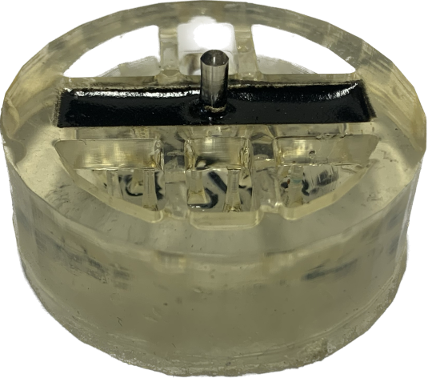
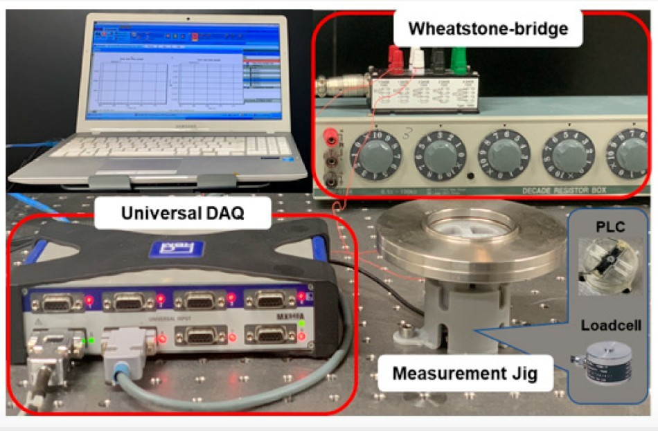

설계와 제작
ANSYS 구조해석과 3D 프린팅을 활용해 센서를 설계·제작했습니다.
PROJECT 06 / SENSOR / FABRICATION
설계와 제작, 계측회로 구성을 거쳐 센서의 출력 신호를 비교 평가했습니다.
01 / CONTEXT
3D 프린팅과 CNT 센서를 활용하는 로드셀 연구에서 구조 설계와 제작, 출력 신호 계측을 수행했습니다.
02 / APPROACH
ANSYS 구조해석과 3D 프린팅을 활용해 센서를 설계·제작했습니다.
Wheatstone bridge, LPF, DAQ로 계측회로를 구성하고 MATLAB으로 신호를 처리했습니다.
03 / VERIFICATION
로드셀을 제작해 출력 신호를 계측하고 상용 로드셀과 비교 평가했습니다.
04 / SCOPE
상용 제품과의 신호 비교 평가 경험이며, 동등한 성능이나 상용화 완료를 의미하지 않습니다.
PROJECT MATERIALS
제작 구성과 실제 결과를
프로젝트 자료로 살펴봅니다.

3D 프린팅 CNT 로드셀 시제품. 센서를 설계·제작하고 계측회로 구성과 출력 신호 계측을 수행했습니다.
제공 포트폴리오 14쪽 수록 자료
Wheatstone bridge와 DAQ를 이용한 신호 계측 구성. 상용 로드셀과 신호를 비교 평가했으며, 제품과 동등한 성능을 주장하는 자료는 아닙니다.
제공 포트폴리오 15쪽 수록 자료